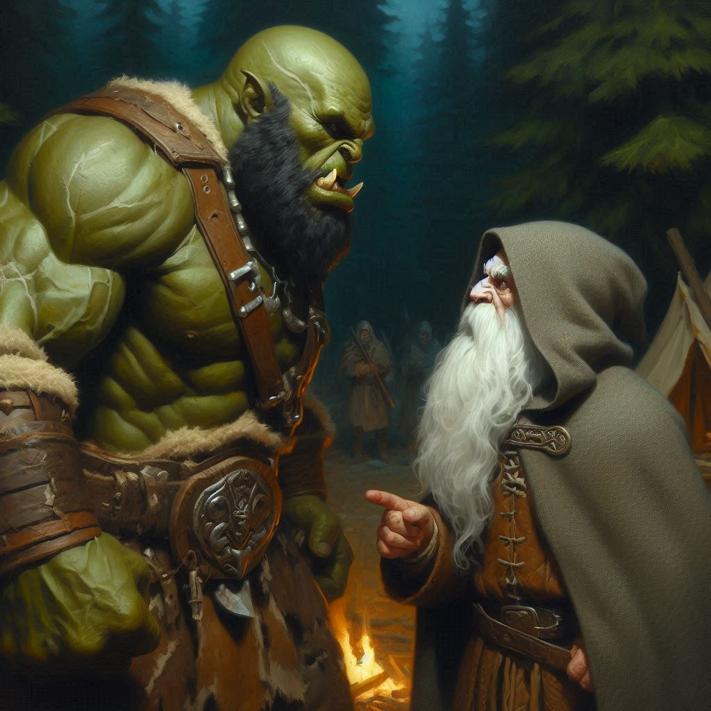
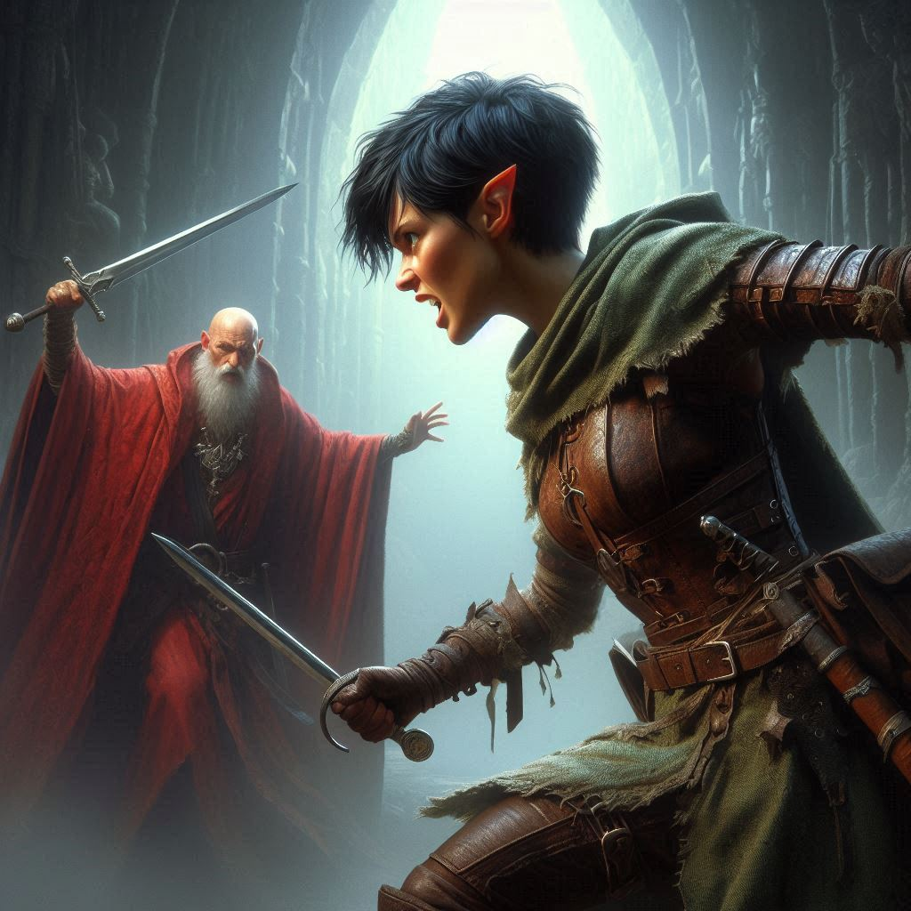
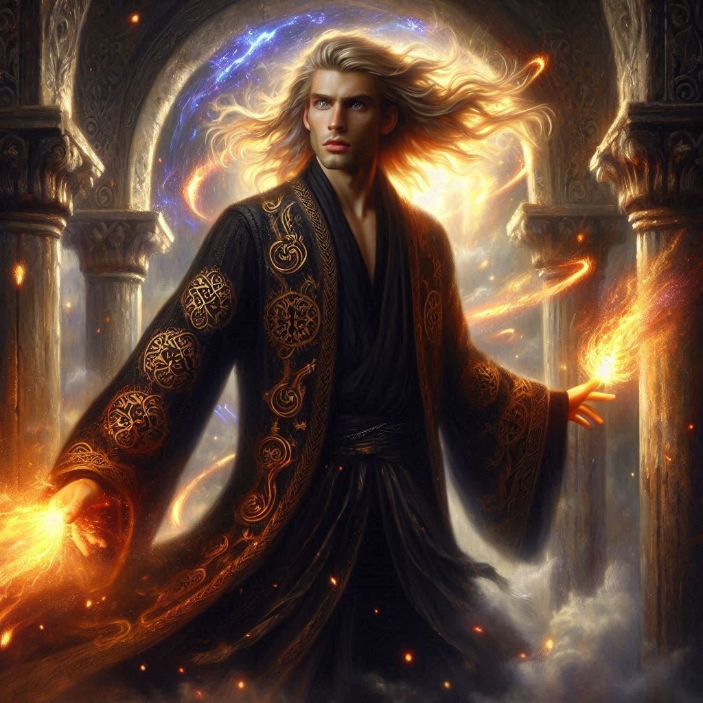
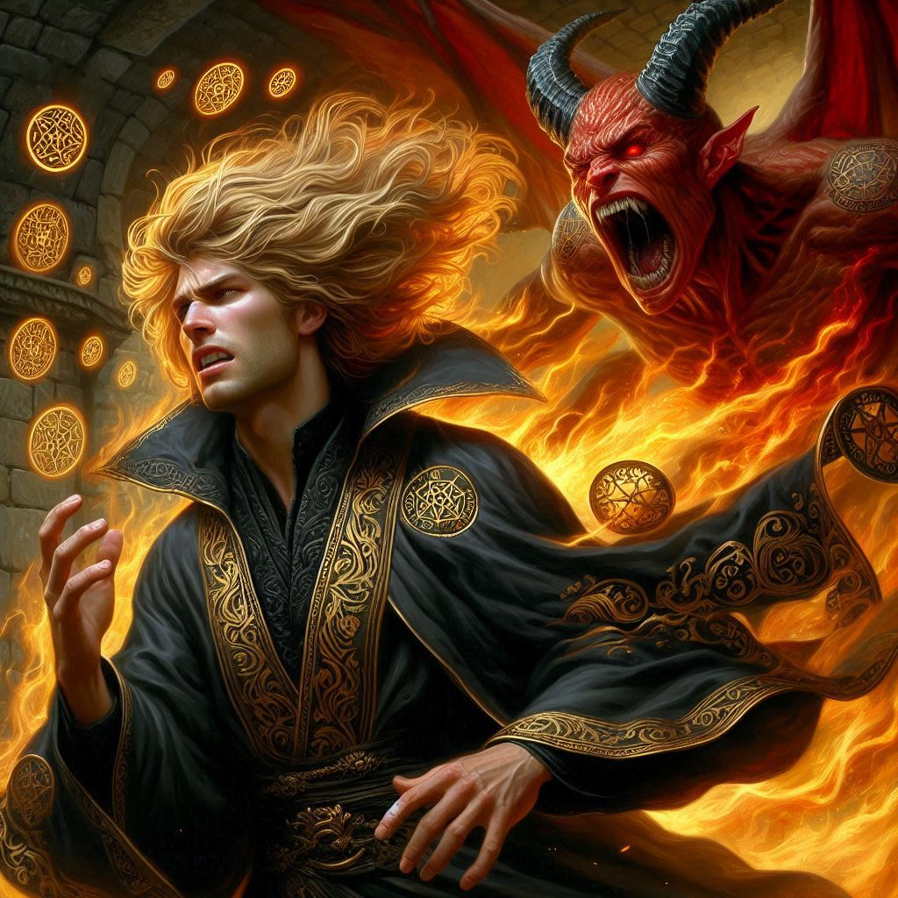

The chill night air clings to your skin like a warning. Baider grips Onyx in a firm bear hug, the dwarf's furious protests muffled by a leather gag. His eyes blaze with righteous anger, but the half-orc doesn't flinch.
“This isn’t the end,” Onyx growls, straining against Baider’s hold. “You don’t know what you’re doing.”
“No,” you say quietly, clutching the rune stone taken from Onyx's pouch. Its surface glows with pulsating runes, a heartbeat of ancient power. “We do. We’re ending this on our terms.”
You meet Baider’s gaze, a silent exchange of trust passing between you. The blacksmith nods once.
“I’ll take him back to Belladonna,” he says. “He’ll be safe. The rest is up to you.”
Onyx struggles one last time, then stills, breathing hard. “Don’t go to Umbra’Thal,” he says. “You’ll die down there.”
“Maybe,” you whisper, stepping away. “But someone has to stop Varis.”
You press your thumb against the center rune.
Light explodes around you.
The smell of scorched stone and brimstone hits your senses like a hammer.
You stumble forward, Elias catching your arm to steady you. The Temple of Umbra’Thal looms in jagged, obsidian arcs. Columns shaped like twisted serpents writhe with flickers of dark flame. Magic clings to the air—thick, oppressive, and ancient.
Ahead, the dais pulses with malevolent power. Varis stands atop it, arms spread wide, chanting in the tongue of the old hells. Around him, dozens of dark elves chant in unison, bloodletting rituals carving runes into the earth.
At the center of the circle is a pit of molten darkness. Within it, Yaldaboath stirs.
The demon lord’s horns pierce the veil between realms. His claws scrape the edge of the summoning pit. Each breath shakes the walls, and the shadows shudder in reply.
Elias whispers beside you, “We’re too late.”
“Not yet,” you whisper. “Not if we fight.”
You draw your blades. Elias nocks an arrow. And together, you charge.
Chaos erupts.
You slice through the first wave of Varis’s elite guard. Black steel clashes with your enchanted blades. Elias’s arrows fly true, each one a death sentence. But there are too many of them.
A cry splits the air—Elias is dragged down by two warriors. You turn to help him but feel the crack of a staff against your skull. Light flares, and your knees buckle.
Darkness swallows you.
You awaken on the stone floor, hands bound behind you with enchanted iron. Elias lies beside you, bloodied but breathing.
A voice echoes overhead.
“Behold,” Varis booms. “The final offering.”
Yaldaboath is fully risen now, his massive body hunched beneath the arched ceiling. His eyes glow like furnaces, and his fanged grin spreads wide.
“I OFFER THEM TO YOU, LORD OF FLAME,” Varis shouts.
Yaldaboath inhales, and the heat in the room triples.
Elias looks at you. “I’m not afraid.”
Then he screams.
Yaldaboath devours him in a flash of red fire, leaving nothing but charred earth.
You scream, rage and horror boiling inside you. You pull against your bonds, but they don’t yield.
Then—light.
A thunderous crack rips through the chamber as a blast of blue magic smashes into Varis, hurling him off the dais.
You look up.
“Jorsh…” you breathe.
He stands like a god of storm and fury, eyes ablaze with power, cloak billowing from the force of his spell.
“You took everything from me!” Jorsh roars.
Varis rises from the stone, bleeding, furious. Dark fire coils around him as he launches spell after spell.
Jorsh deflects them with deft counters, responding with blasts of divine energy that split the air. The temple shakes. Statues shatter. Runes burn white-hot.
You watch, helpless, as their duel reaches its apex. Then—Jorsh thrusts both palms forward. A bolt of crackling light pierces Varis’s chest.
The dark elf stares at it in disbelief, gasps, and falls backward into the summoning pit, his scream lost to the fires of hell.
The chamber stills.
Yaldaboath, looming above the dais, turns his burning gaze to Jorsh.
“You slew my servant,” the demon rumbles. “And yet the covenant remains. Blood for blood. Power demands a price.”
Jorsh turns to you. For a heartbeat, you see the boy he used to be—the one who made you laugh under the apple trees. The one who gave you your first kiss.
“I know the price,” he says.
“No!” you shout, struggling to rise. “There must be another way!”
He kneels beside you, cupping your face with trembling hands. “There isn’t. Not this time.”
You see it in his eyes—the truth, and the love still burning behind it.
Jorsh turns back to Yaldaboath. “Take me. Let the girl live. End the covenant.”
Yaldaboath considers, then slowly nods.
“So be it.”
A pillar of flame engulfs Jorsh. You scream again—overwhelming grief crushes you chest. It’s a scream of farewell.
When the light fades, both Jorsh and Yaldaboath are gone.
Silence settles over Umbra’Thal.
The summoning pit closes with a hiss. The runes go dark. The elves are gone—fled or dead. You kneel in the center of the broken temple, the rune stone still clutched in your hand.
You’re alone.
But the world is safe.